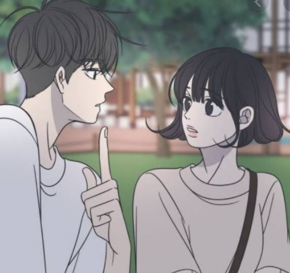

#이유 : 싱어게인을 통해 이 밴드의 보컬인 '서영주'를 처음 알게 되었다. 원래 내가 막 배우나 아이돌에 빠지는 성격이 아닌데 얘는 보자마자 '와 미친' 이런 생각이 들더라. 일단 목소리가 예쁘다. 고음까지 쫙쫙 뻗어 올라가고. 가볍지 않고 그렇다고 막 무겁지 않다. 항상 인기가 많은 가수들 예를 들면 크러쉬, 자이언티, 라우브 등 이런 가수들과는 느낌이 전혀 다른 목소리이다. 약간 얼굴도 내 취향이다. 대성 마이맥에 영어 '이명학'닮았다.(난 이명학도 참 좋아했다.)
#추천하는 노래
: 좋은밤 좋은꿈 / 대나무숲/ back in time / 연극 속으로 / 우리의 밤은 당신의 낮보다 아름답다#나에게 요거트란? : 그냥 일상이다. 수 많은 음식들 중 왜 내가 요거트를 내 최애 음식으로 뽑았냐면, 이 친구는 음식들 중 내가 좋아했던 기간이 가장 길다. 초등학교 3학년때부터 '내가 요거트를 좋아하구나' 인지했으며! 그때 이후로 쭉 좋아하는 것이니 말이다. 아, 내가 요거트를 초3때부터 좋아했다는 사실을 어떻게 기억하냐면, 내 네이버 아이디를 초3때 다시 만들었는데 그 아이디 이름이 loveyogurt이다. 이 아이디를 지금까지 쭉 써오고 있는데, 요즘은 내 아이디나 메일주소 남한테 알려주기가 좀 부끄럽더라. 친구들이 정말 많이 놀린다^^
#어떤 웹툰? : 사실 보는 웹툰이 너무 많아서 여기에 다 소개하기는 불가능하고, 제일 좋아하는 웹툰 하나만 뽑아보자면,,,음 너무 어려운데,,, 음,, 네이버에서 매주 화요일마다 연재하는 '바른연애 길잡이'를 뽑겠다. 그냥..남주 너무 내 스타일이고 너무 잘생겼고 세상에 이런 사람이 존재하나 싶다. 여주도 너무 귀엽다. 보통 난 여주를 별로 좋아하지 않는데 이 웹툰의 여주는 정말,,사랑스럽다, 귀엽다. 이러니까 저런 완벽한 남주를 남자친구로 두고있지 않을까.
#그냥 봐라 : 이 애니를 왜 이제야 봤을까. 한탄스럽기만하다. 나는 애니메이션을 좋아한다. 꿈빛파티시엘, 이누야샤, 명탐정 코난, 도라에몽, 소년탐정 김전일, 피치피치핏치, 짱구, 원피스 등 옛날부터 애니메이션에 대한 커리어를 쭉 쌓아왔다. 최근에 잘 안보다가 수업 듣기 싫고 과제 너무 하기 싫어서 머리좀 식힐겸 넷플릭스에 들어갔는데 어머나 하이큐가 나와있는 것이었다! 그래서 4화까지만 볼까? 하다가 2기 20화까지 그냥 그자리에서 달렸다. ㅋ 이번주까지 제출해야하는 과제 많은데 큰일났다. 하나도 안했다. 하지만 후회하지 않는다. 너무 재밌게 봤다. 자기소개 페이지 다 만들고 또 하이큐 보러 갈것이다. 난 노야랑 카게야마가 젤 좋다. ㅎ